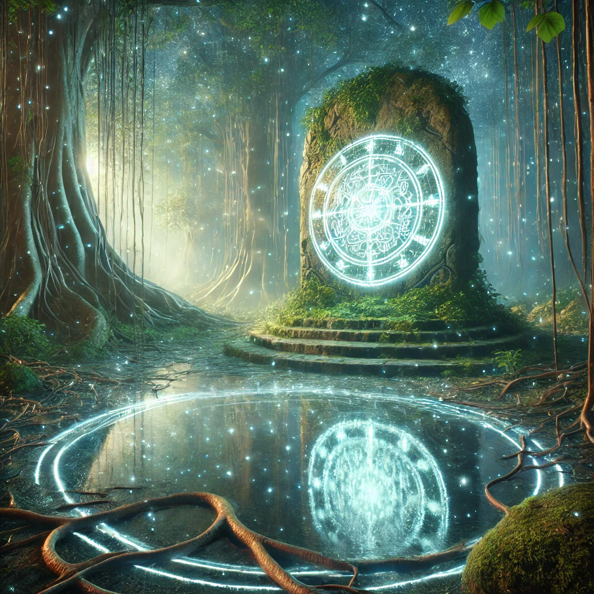

The compass glows brightly in your hand, its needle spinning as though seeking something just out of reach. A soft hum fills the air, guiding you toward an ancient stone pedestal shrouded in moss and vines. As you approach, you notice faint glyphs carved into its surface, pulsing gently with light.
“The key lies hidden,” whispers a voice, low and resonant. “It is not a physical object but a truth waiting to be uncovered. To find it, you must look beyond the surface and into the essence of the moment.”
The pedestal reveals three possible places to begin your search: a shimmering pool reflecting the starlit sky, a cluster of ancient trees whose roots seem to pulse with life, and a swirling vortex of light hovering above the ground.

Where will you search?